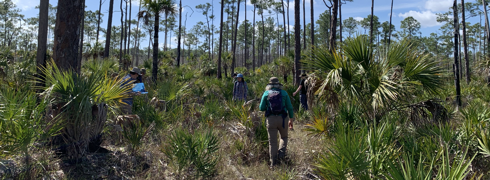

AI-driven Tree Detection in South Florida:
Benchmarks and Fine Tuned models for YOLO and Deep Forest
Muhammad Ahsan Saleem mas8099@miami.edu
Rayan Arya - rxa1388@miami.edu
Timothy B Norris, PhD - tnorris@miami.edu
Rayan Arya - rxa1388@miami.edu
Timothy B Norris, PhD - tnorris@miami.edu
University of Miami Frost Institute for Data Science and Computing Seminar - October 13 2026
Key Findings
Summary Review
- Correa Martins JA, Nogueira K, Osco LP, Gomes FDG, Furuya DEG, Gonçalves WN, Sant’Ana DA, Ramos APM, Liesenberg V, dos Santos JA, et al. Semantic Segmentation of Tree-Canopy in Urban Environment with Pixel-Wise Deep Learning. Remote Sensing. 2021; 13(16):3054. https://doi.org/10.3390/rs13163054
- Yoo J, Qi Y, Ashe-McNalley I, MacDonald B, Wilson JP. An Open and Transferable Deep Learning Framework for Mapping Urban Tree Canopy Using NAIP Imagery. Remote Sensing. 2026; 18(12):1899. https://doi.org/10.3390/rs18121899
Acknowledgements
Thanks:
Chris Mader, Teddy Lhoutellier, Ken Feeley, Dharma Proctor, all the students who labelled trees on campus and in Big Cypress, Chris Elliot, Nick Alberti, Jerry Bonnell, Son Vo, Nathaniel Cockshutt, and others ...

an outline
The outline
- Item one
- Item two
- Item three
- Item four
- Item five
two columns of text
A good title
One line
second line
third line
fourth line
second line
third line
fourth line
}
One line
second line
third line
fourth line
second line
third line
fourth line
/
First outcome
First outcome
\
Second outcome
Second outcome
image with title
A good title

APA 7th citation
data sharing
DCN Researcher Study 2018 (n=91)
Johnston, L. R., Carlson, J., Hudson-Vitale, C., Imker, H., Kozlowski, W., Olendorf, R., & Stewart, C. (2018). How Important is Data Curation? Gaps and Opportunities for Academic Libraries. Journal of Librarianship and Scholarly Communication, 6(1), eP2198. DOI: https://doi.org/10.7710/2162-3309.2198
Documentation
Chain of custody
Chain of custody
Emulation
Restricted Access
Contact Information
Full-Text Indexing
Restricted Access
Contact Information
Full-Text Indexing